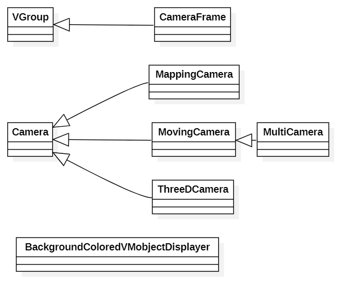
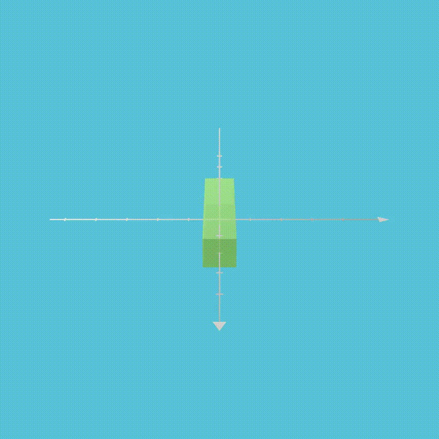
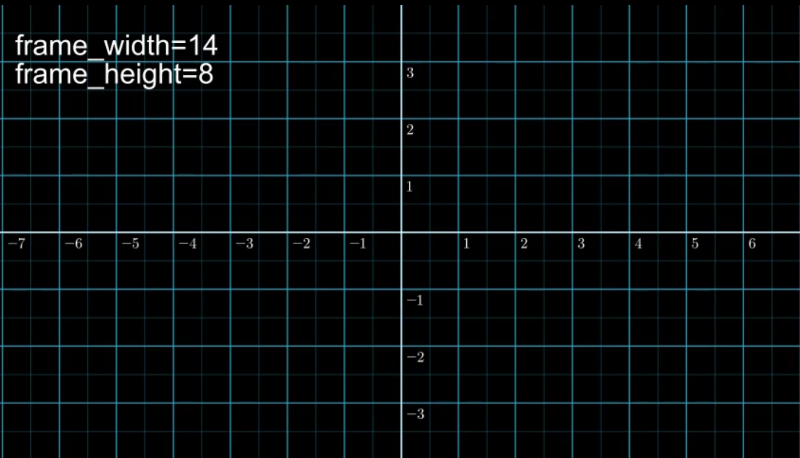
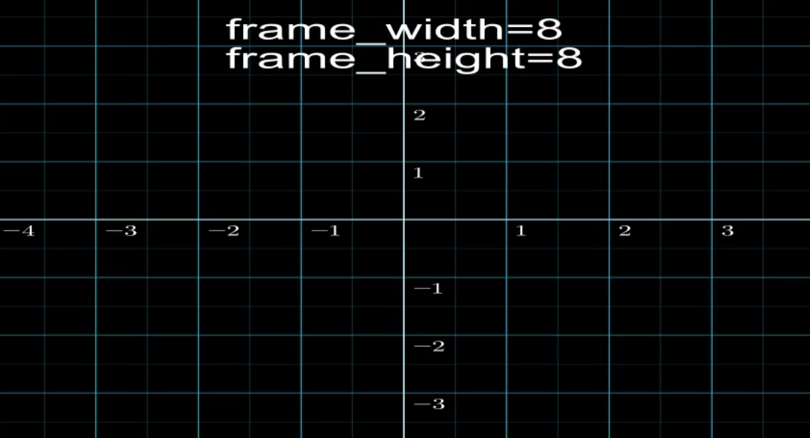
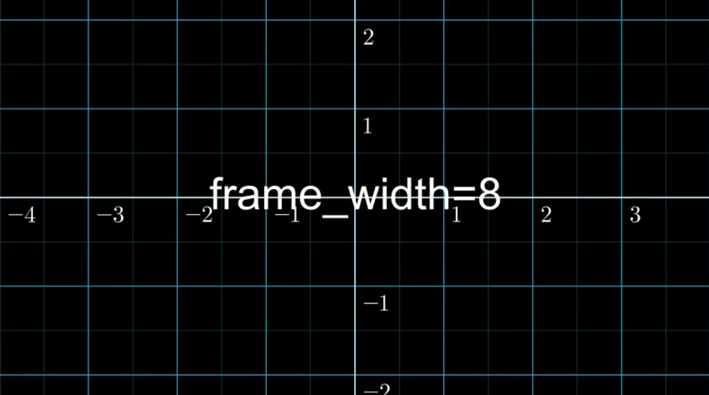

1. camera的所有子类以及相关的类

2. camera主要的变量与属性
2.1 CONFIG
CONFIG = {
"background_image": None,
"pixel_height": DEFAULT_PIXEL_HEIGHT,
"pixel_width": DEFAULT_PIXEL_WIDTH,
"frame_rate": DEFAULT_FRAME_RATE,
# Note: 帧的高度和宽度将被调整大小以匹配像素长宽比
# 这个在constant.py中可以看到：
# FRAME_WIDTH = FRAME_HEIGHT * DEFAULT_PIXEL_WIDTH / DEFAULT_PIXEL_HEIGHT
"frame_height": FRAME_HEIGHT,
"frame_width": FRAME_WIDTH,
"frame_center": ORIGIN,
"background_color": BLACK,
"background_opacity": 1,
# vectorized mobjects的点在大于下面的范围时候会缩小
"max_allowable_norm": FRAME_WIDTH,
# 图像的模式，此处默认是RGBA，参见数字图像处理
"image_mode": "RGBA",
# 图像通道，参见数字图像处理
"n_channels": 4,
"pixel_array_dtype": 'uint8',
# z_buff_func is only used if the flag above is set to True.
# 比较时将z坐标舍入到最接近的百分之一
"z_buff_func": lambda m: np.round(m.get_center()[2], 2),
"cairo_line_width_multiple": 0.01,
}
2.2__init__()函数
rgb_max_valRGB色彩的取值的最大值，默认的uint8取值最大值是255pixel_array_to_cairo_context将像素变成cairo能处理的形式
3. camera的主要方法
reset_pixel_shape(new_height, new_width)设置帧的像素宽与高class Test_pixel(ThreeDScene): def construct(self): axes = ThreeDAxes() cube = Cube(fill_color=GREEN).scale([2, 0.5, 0.5]) theta_0 = 0 # 起始角度 theta = -120 * DEGREES # 目标角度 self.set_camera(ThreeDCamera(background_color=BLUE)) self.camera.reset_pixel_shape(854,854) self.set_camera_orientation(60 * DEGREES, theta=theta_0) self.add(axes, cube) self.wait() dt = 1/15 delta_theta = (theta - theta_0) / 60 for i in range(60): theta_0 += delta_theta self.set_camera_orientation(theta=theta_0) self.wait(dt) self.wait(2)上面代码设置宽高为854*854，最后就会产生大小为854*854的视频：

一些get,set函数：
def get_pixel_height(self): return self.pixel_height def get_pixel_width(self): return self.pixel_width def get_frame_height(self): return self.frame_height def get_frame_width(self): return self.frame_width def get_frame_center(self): return self.frame_center def set_frame_height(self, frame_height): self.frame_height = frame_height def set_frame_width(self, frame_width): self.frame_width = frame_width def set_frame_center(self, frame_center): self.frame_center = frame_centerframe和pixel的区别是：一个是将帧分为多少格，一个是将帧的大小设置为多少，前者仅仅会改变坐标的间隔，后者会改变视频的宽高
原始的默认为frame_width=14，frame_height=8：
class Set_frame1(Scene): def construct(self): numberplane = NumberPlane() numberplane.add_coordinates() text = Text("frame_width=14\nframe_height=8").shift(LEFT*5+UP*3) self.add(numberplane,text) self.wait(2)
重新设置frame_width:
class Set_frame1(Scene): def construct(self): numberplane = NumberPlane() numberplane.add_coordinates() self.camera.set_frame_width(8) text = Text("frame_width=8\nframe_height=8").shift(UP*3) self.add(numberplane,text) self.wait(2)可以看到宽也被拉长了：

resize_frame_shape(fixed_dimension=0):更改frame_shape以匹配像素的长宽比，其中fixed_dimension确定frame_height或frame_width是否保持固定，而其他值则相应改变。
class Set_frame1(Scene): def construct(self): numberplane = NumberPlane() numberplane.add_coordinates() self.camera.set_frame_width(8) self.camera.resize_frame_shape() text = Text("frame_width=8") self.add(numberplane,text) self.wait(2)
get_image(pixel_array=None)返回
pixel_array对应的Image类型的对象，如果pixel_array为空,则返回自身的pixel_array对应的Image图像,此函数一般不用get_pixel_array()返回自身的
pixel_arrayconvert_pixel_array(pixel_array, convert_from_floats=False)将格式为
PIL的pixel_array图片转换为np.array的格式其中
pixel_array的形式可能有两种,第一种是RGB的格式进行表示,第二种是被归一化到[0,1]的小数形式,此时需要启用convert_from_floats=Trueset_pixel_array(pixel_array, convert_from_floats=False)设置camera的
pixel_array为参数中的pixel_array,对应的选项同理于`convert_pixel_arrayset_background(pixel_array, convert_from_floats=False)设置背景(本人没有成功尝试出来换背景图片不知道出了什么问题,代码如下)
class Set_background(Scene): def construct(self): image = Image.open(r"XXX.png") self.camera.set_background(image) # self.camera.init_background() numberplane = NumberPlane() numberplane.add_coordinates() self.add(numberplane) self.wait(2)上面就是随便加了个物体,不知道为什么出现这个问题
make_background_from_func(coords_to_colors_func)另一个函数是
set_background_from_func(coords_to_colors_func)功能一样使用coords_to_colors_func设置背景以确定每个像素的颜色。 coords_to_colors_func的每个输入在空间中都是（x，y）对（在frame对应的普通空间坐标,不是像素坐标），并且每个输出应为4个浮点数的RGBA数组。
def coords_to_colors_func(point): return (int)(255*(point[0]+7)/17),(int)(255*(point[1]+4)/8),(int)(255*(point[0]+11)/22),1 class Set_bacground_func(Scene): def construct(self): self.camera.set_background_from_func(coords_to_colors_func) square = Square() self.add(square) self.wait(2)
reset()重设背景
get_mobjects_to_display()得到要展示的mobject
is_in_frame(mobject)判断mobject是否在frame里面
points_to_pixel_coords(mobject, points)将普通坐标,转换为像素坐标
其他的函数本人也没有很理解,而且涉及到cairo库的学习,个人觉得没有必要深入了解其他的函数,因为有的函数3b1b仅仅是用来子类实现或者根本没有用过,如果需要请自行阅读源码
4. 小结
本次学习camera很多函数偏于底层,我们平时绘制的时候应该用不上,camera的很多关于背景(background)的函数感觉很多都难以使用或者有各种bug(不知道是不是我自己不会用的原因),如果有人发现错误欢迎评论留言😄